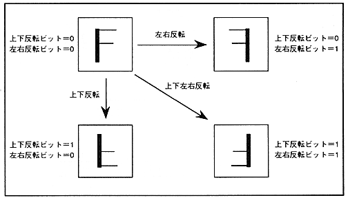

Table 4.7 Inversion function bit
Vertical flip bit | Vertical flip bit | Processing |
| 0 | 0 | Do not flip both vertically and horizontally |
| 0 | 1 | Flip left and right only |
| 1 | 0 | Flip only top and bottom |
| 1 | 1 | Flip both vertically and horizontally |
Figure 4.12 Reverse display of character pattern
